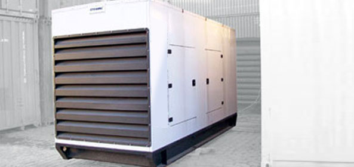
Geradores a diesel / Power Packs
Fique tranquilo na falta de energia elétrica ou quando precisar de mais carga. Alimentados a diesel, com autonomia de horas.
Containers Reefer e Dry, Open Top, Flat Rack, geradores a diesel e quadros de tomadas para operações no Porto de Santos e na Baixada Santista, mesmo sem energia da rede.
A Gtainer atua na locação de containers Dry, Reefer e geradores de energia. Trabalhamos com geradores de pequeno a médio porte, alimentados a diesel e com autonomia para durar horas, mantendo seu equipamento em perfeito funcionamento.

Fique tranquilo na falta de energia elétrica ou quando precisar de mais carga. Alimentados a diesel, com autonomia de horas.
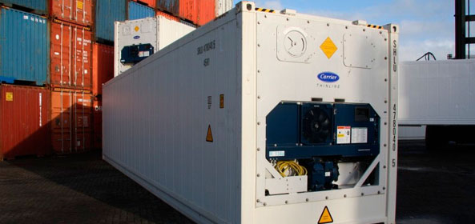
Refrigerados de -25 °C a +25 °C ou carga seca, para armazenagem temporária e demandas sazonais.
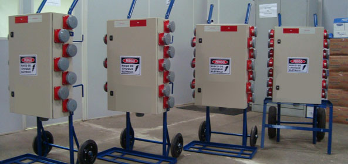
Móvel, tipo Steck (3P + T), 380/440 V, com disjuntores independentes e um principal.
Locar um container normalmente supre uma necessidade pontual, sem investimento em estrutura própria.
| Modelo | Largura | Compr. | Altura | Capacidade |
|---|---|---|---|---|
| 20' | 2,30 m | 5,45 m | 2,16 m | 28,4 m³ |
| 40' HC | 2,30 m | 11,60 m | 2,40 m | 67,5 m³ |
Precisa de transformador, gerador ou quadro de tomadas para o seu Reefer? Basta nos contatar que realizamos toda a assessoria necessária.
Dimensionar meu Reefer no WhatsAppGrande disponibilidade de containers Reefer (refrigerados) e Dry (carga seca), além de Open Top, Flat Rack, High Cube e Plataforma. Consulte-nos!
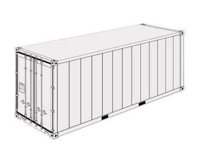
20' e 40'Refrigerado para cargas perecíveis, com controle de -25 °C a +25 °C e monitoramento remoto.
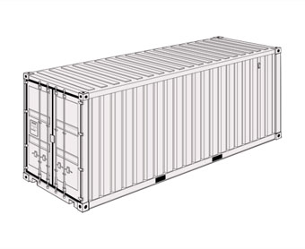
20' e 40'Para qualquer tipo de carga. Vários pontos de peação nas laterais, piso e teto.
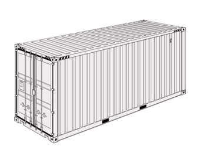
40'Para cargas de grande volume: carga geral não perecível de baixa relação peso/volume.
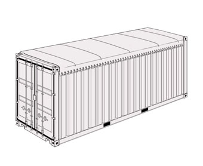
20' e 40'Teto em lona removível para cargas com excesso de altura, carregadas por cima com guindaste.
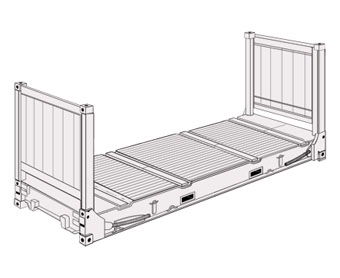
20' e 40'Para cargas com peso e largura extra, que não caberiam em containers normais, e cargas de projeto.
Para cargas com excesso de peso e de dimensões laterais e de altura.
Valores 20' / 40'. Dimensões, pesos e volumes são médias e variam de acordo com a série dos containers.
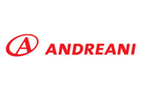
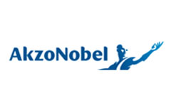
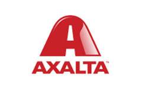
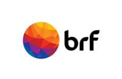
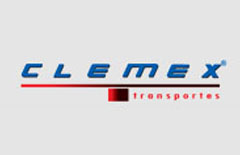
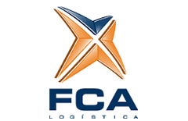
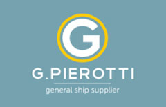
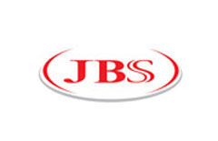
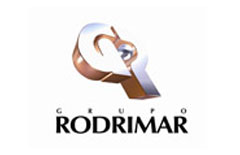
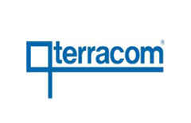
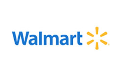
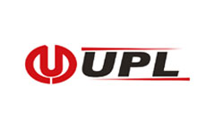
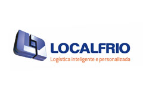
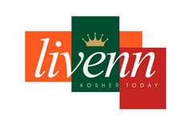
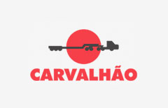
Para necessidades pontuais: durante a manutenção da câmara frigorífica, em épocas sazonais como Natal e verão, em eventos promocionais e para armazenar carga evitando cobrança de demurrage.
De -25 °C a +25 °C, com consumo médio de 7 kW em 440 volts trifásico. Se necessário, fornecemos transformadores.
Reefer (refrigerado), Dry/Standard, High Cube, Open Top, Flat Rack e Plataforma, nos tamanhos 20' e 40'.
Os geradores são alimentados a diesel, de pequeno a médio porte, com autonomia de horas. Também oferecemos tanques externos para ampliar a operação.
Para orçamento, o caminho mais rápido é o WhatsApp comercial. Diga qual equipamento, por quanto tempo e onde será entregue.